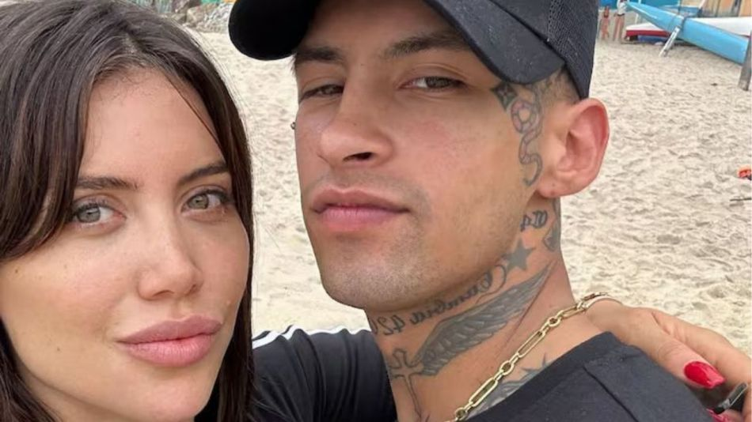

Quien filtró la conversación que tuvieron la conductora con el referente de cumbia RKT fue Yanina Latorre. La periodista contó todo lo que Wanda Nara le hizo llegar, “Me dijo que a Elián no le va a dejar pasar una, que a la primera cosa que vea rara, alguna foto o algo, lo deja”, expresó en LAM anoche. “Ella se lo toma en serio”, aseguró Yanina. “Sabe que él es más chico, que tiene un montón de cosas para tratar de acomodar entre los dos, pero confía plenamente en la persona que elige hasta que le demuestra lo contrario”, cerró sobre lo que le contó Wanda Nara, quien se mostró feliz con L- Gante en su reciente viaje a Brasil. Durante la semana del 6 de noviembre todos los medios y redes hablaban de la relación de Wanda Nara con L-Gante, que fue blanqueada por ellos a través de un vivo que realizó la cantante en su cuenta de Instagram. Esto despertó grandes problemas con Mauro Icardi, por lo que la empresaria decidió dar a conocer más detalles de su vida.

La conductora de Bake Off Famosos habló con Yanina Latorre y le contó de todo, por lo que la panelista reprodujo todo en LAM, “A Wanda le molesta que la juzguen por salir con un chico de 24 años. Ella me dice, ‘yo ya sé que él es diferente a mí, que se expresa distinto, que tiene otra manera de vivir, pero yo me enamoré”, expresó la periodista. “Ella me dijo que es una relación seria, que ella le planteó y lo habló con él que necesita títulos, poner fechas y un vínculo. Ella es la novia de Elían, le guste a quien le guste. Tienen fecha de aniversario. Se pusieron de novios el día anterior de la fiesta de Bake Off, hace 11 días”, continuó Yanina Latorre sobre su charla con Wanda Nara. La periodista también dio detalles del fin de relación entre la conductora de Bake Off famosos y Mauro Icardi; “Me dice, ‘entiendo que es confuso porque en estos meses largos me costó muchos cortar el vínculo y todavía me está costando mucho’. También me dijo que le está costando mucho sostener esta separación por Mauro, porque parece que no lo entiende o no lo asume. No me habló mal de él, ni lo criticó, ni lo humilló en ningún momento”, continuó Yanina Latorre.
Si bien su relación con L- Gante recién lleva pocos días de iniciada, la pareja se muestra feliz compartiendo momentos con la familia de cada uno y su reciente vuelta de Brasil. Sin embargo, los problemas con Mauro Icardi siguen ahí. Con la reciente llegada del futbolista al país, las cosas se complicaron mucho para Wanda Nara, quien busca poder darle paz a su nuevo noviazgo y a sus hijos.